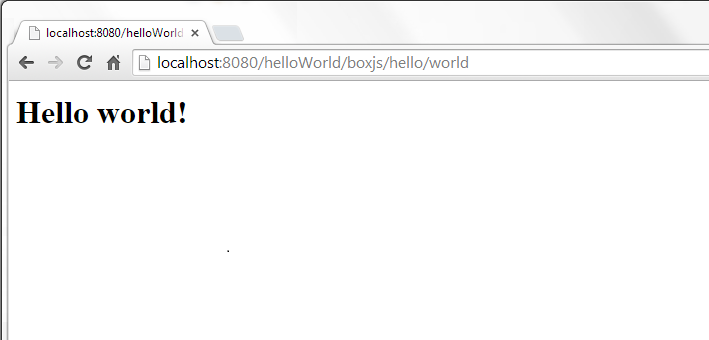

boxJS
O boxJS é um container de execução JavaScript para servidores Web, ou seja, é uma plataforma Server-Side JavaScript(SSJS).
Primeiros Passos
Depois de configurar o seu ambiente para o funcionamento do boxJS, já podemos criar nosso primeiro arquivo javascript que será executado pelo servidor. Podemos chamá-lo de 'hello.js' e escreveremos apenas o seguinte código nele:
exports = {
world: function (params,request,response) {
response.write("<html><body> <h1>Hello world!</h1> </body></html>");
}
}
Agora, já podemos acessar nossa primeira página fornecida via boxJS através da seguinte URL localhost:8080/<nome_do_projeto>/boxjs/hello/world.

Precisando de Ajuda?
Envie-nos um e-mail
Faça perguntas no Stackoverflow usando a tag boxJS
Vantagens
- SSJS baseado em threads
- Performático
- Fácil aprendizado
- Simples de usar
- Bom conjunto de APIs para utilização imediata
Sumário
- Configurando o ambiente de desenvolvimento
- Configurando o
config.js - Configurando rotas
- Utilizando o
security.js - MongoDB
Configurando o ambiente de desenvolvimento
Para começarmos a trabalhar com o boxJS precisamos, antes de mais nada, fazer algumas configurações no nosso ambiente de desenvolvimento. Começamos criando um Dynamic Web Project:

Neste passo é importante checar se o Tomcat esta selecionado e clicar para ir para o próximo, ao invés de finalizar, conforme imagem abaixo:

Nesta tela não há necessidade de modificar nada, apenas siga para a próxima.
Nesta parte é importante marcar a opção de gerar o web.xml automaticamente, conforme imagem abaixo:
Pronto, temos nosso primeiro projeto criado, porém o boxJS ainda não funcionará, precisamos fazer apenas mais uma configuração.
Adicionaremos à pasta lib, que está dentro da pasta WEB-INF, que, por sua vez, está dentro da pasta WebContent, o jar do boxJS,
do Tomcat e da api de servlet, conforme imagem abaixo:
Feito isso, basta que adicionemos nosso novo projeto ao Tomcat, conforme as imagens abaixo:
É importante lembrar que todos os arquivos .js devem estar dentro da pasta boxjs ou algum subdiretório, conforme a
imagem abaixo.

Pronto, nosso ambiente já está completamente pronto para funcionar o boxJS!
Configurando o config.js
Voce pode ter reparado que o servidor encontrou alguns erros ao subir nosso primeiro projeto, isso aconteceu pois
toda vez que o boxJS é instanciado ele procura pelo arquivo config.js dentro da pasta boxjs, este arquivo
contém configurações a serem executadas assim que o box é instanciado.
Um exemplo do que é possível fazer com essas configurações é a inclusão de módulos, que devem seguir o seguinte padrão.
var config = {
modules: ["routes", "mongodb", "io", "binary", "jsrender","init"]
};
Para alguns módulos, como por exemplo o mongodb, é necessário que se inclua mais algumas configurações. No caso
do mongo, é necessário citar o link com o banco, o que deve deixar nosso config.js da seguinte forma:
var config = {
modules: ["routes", "mongodb", "io", "binary", "jsrender","init"],
mongodb: {
datasource: "java:comp/env/mongo/MongoDSFactory"
}
};
OBS: Além disso, para utilizarmos o mongo é necessário criar o datasource no context.xml, isso pode ser feito adicionando a seguite tag (com suas devidas alterações) ao context.xml do Tomcat que rodará seu projeto.
<Resource name="mongo/MongoDSFactory" auth="Container"
type="com.mongodb.MongoClient" factory="softbox.boxjs.MongoDSFactory"
singleton="false" user="" pass="" uri="mongodb://localhost:27017/nome_do_banco"/>
Configurando rotas
Além das páginas html que estão na pasta WebContent que são fornecidas normalmente pelo Tomcat, já sabemos que é possivel
fornecer páginas através de comandos Javascript desde que os arquivos com estes comandos estejam dentro da pasta boxjs.
Outra possibilidade que o boxJS traz é o uso de rotas, essas rotas podem ser definidas no arquivo config.js, do qual já
falamos anteriormente, ou em um outro arquivo qualquer, desde que este seja adicionado como
módulo no config.js. Consideramos o segundo modo o mais correto e é ele que pode ser encontrado no exemplo abaixo:
Primeiro devemos criar nosso arquivo config.js, nele incluiremos apenas o nosso módulo routes:
var config = {
modules: ["routes"]
};

Agora podemos criar o arquivo routes.js que irá conter nossas rotas:
Router.add( 'hello', 'actions/hello');
Router.add( 'bye', 'actions/bye');

Os argumentos da função add, usada acima, são, respectivamente, o Url pattern daquela rota e o arquivo JS que responderá às requisições que
chegarem nela (o caminho deste arquivo é apartir da pasta boxjs).
No arquivo JavaScript dado como segundo argumento deve ser definido um objeto exports que terá como propriedade o que será suportado
no restante da URL, cada uma dessas propriedades é na verdade uma função que lida com a requisição do usuário.
Para o nosso exemplo, criamos o hello.js com o seguinte código:
exports = {
modern: function (params,request,response) {
response.write("<html><body> <h1>Hey route!</h1> </body></html>");
},
std: function (params,request,response) {
response.write("<html><body> <h1>Hello route!</h1> </body></html>");
}
}
E o bye.js com:
exports = {
std: function (params,request,response) {
response.write("<html><body> <h1>Bye route!</h1> </body></html>");
}
}
Agora podemos acessar cada um desses métodos, respectivamente, com as seguintes URL:
Utilizando o security.js
Caso algum módulo com o nome de security seja adicionado ao config.js, o boxJS garante que todas as requisições, passem,
primeiramente, por este módulo, isso possibilita que seja criado algum tipo de restrição de acesso, onde uma certa página só será
fornecida pelo servidor caso as restrições impostas pelo módulo security sejam atingidas.
Por padrão o arquivo security vem conforme descrito aqui, ou seja, autorizando todo e qualquer acesso, porém tornar alguma página inacessível é uma tarefa simples.
Podemos tornar a página localhost:8080/helloWorld/boxjs/hello/modern inacessível fazendo as seguintes alterações ao security.js padrão:
safe.hasPermissionInThisMethod = function (paramsObject, request, response, methodName) {
if(methodName=="modern") {
http.response.setStatus(403);
return false;
}
return true;
};
Lembramos que o security.js que vai junto com o boxJS é apenas um esboço de um módulo de segurança, quem o utiliza tem liberdade para
(e deve) alterar o seu funcionamento.
OBS: Para pegar um header de uma requisição, basta usar o seguinte método http.requestJava.getHeader("nome-do-header").
MongoDB
Preparando para usar o MongoDB
Como citado na parte de como usar o config.js, para usarmos o mongoDB o primeiro passo é adicioná-lo aos
módulos no config.js e citar o link com o banco:
var config = {
modules: ["mongodb"],
mongodb: {
datasource: "java:comp/env/mongo/MongoDSFactory"
}
};
Após modificar o config.js para ter estas configurações, devemos adicionar o datasource ao nosso servidor, isso pode ser feito adicionando
a seguinte tag ao context.xml:
<Resource name="mongo/MongoDSFactory" auth="Container"
type="com.mongodb.MongoClient" factory="softbox.boxjs.MongoDSFactory"
singleton="false" user="" pass="" uri="mongodb://localhost:27017/nome_do_banco"/>
Agora adicione o módulo do mongo a sua pasta modules.

Finalmente, adicione o jar do driver de conexão ao mongo à pasta lib do WEB-INF e tudo deve funcionar normalmente.
Usando o MongoDB
Para usar o MongoDB recomendamos a criação de um módulo init.js, com apenas o seguinte código:
db = db || {};
db.nome_do_banco = function() {
return db.MongoDB.getDB("nome_do_banco");
}
Esse módulo init deve ser adicionado ao config.js e é importante para garantir que não serão criadas múltiplas conexões com o banco, com este passo pronto, basta que,
quando for necessário acessar uma collection, seja utilizado um código semelhante a:
var collection = db.nome_do_banco().getCollection("nome_da_collection");
Com uma collection em mãos uma variedade de operações pode ser utilizada:
- insert(doc) - insere um documento a uma collection
- find(query,fields) - executa a 'query' na collection retornando apenas os campos determinados em 'fields'
- count(query) - conta quantos documentos são compatíveis com 'query', sem carregá-los
- distinct(field, query) - retorna os valores que um determinado campo, 'field', assume, caso haja uma 'query', só retorna os valores distintos para esta 'query'
- remove(query) - remove as emtradas que são compatíveis com 'query'
- update(query,update,options) - atualiza as entradas que são compatíveis com 'query' para o valor 'update', sendo possível utilizar duas configurações opcionais:
- upsert - caso nenhuma entrada seja compatível com 'query', invés de atualizar, insere uma nova entrada
- multi - atualiza todas as entradas compatíveis com 'query'
- aggregate - http://docs.mongodb.org/manual/aggregation/
Mais detalhes podem ser vistos no próprio código comentado do módulo do mongo que você adicionou a sua pasta modules.